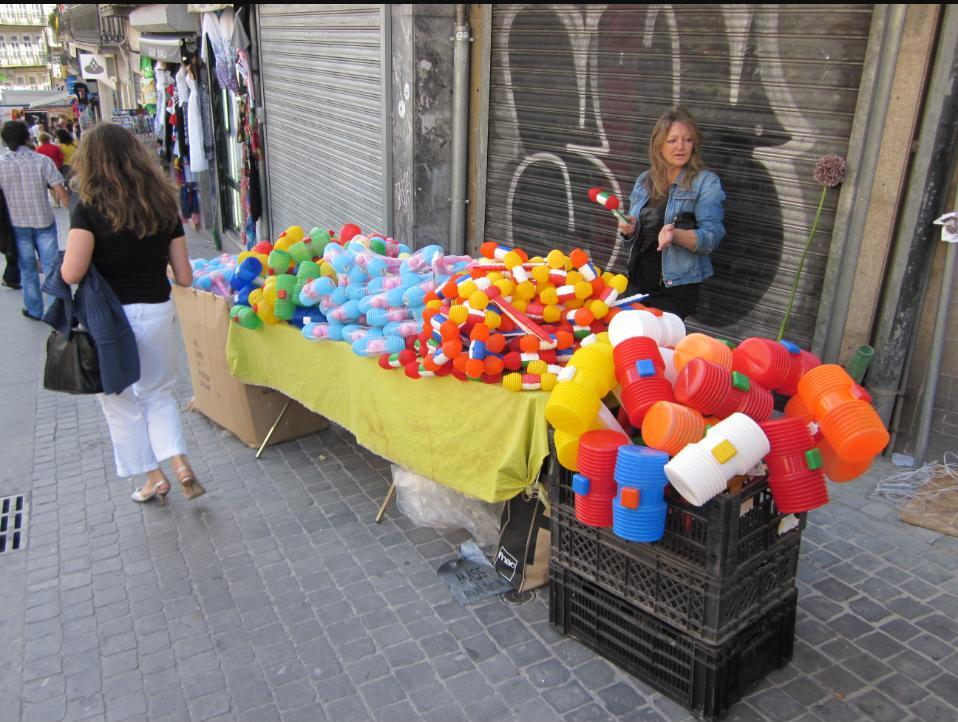

Porto's biggest night of the year is almost here. The Festa de São João runs across much of June, building to the main night of June 23 into the 24th, when the city's bars, squares and riverbanks fill for what is one of Europe's largest street festivals.
The tradition of tapping strangers on the head with squeaky plastic hammers — a modern, gentler descendant of an older custom involving leeks — remains the festival's signature image, alongside pots of manjerico basil, paper balloons released into the night sky, and grilled sardines served on every street corner.

This year's fireworks display, timed for midnight on the 23rd, expands beyond the traditional Ribeira launch zone to cover a wider stretch of the Douro between the Luís I and Arrábida bridges, with the show expected to run for around 16 minutes. The best vantage points remain the Jardim do Morro in Vila Nova de Gaia, the Guia riverfront and the Ribeira itself, all of which fill early with spectators.
The celebrations continue on the morning of June 24 with the Regata de Barcos Rabelos, the traditional boat race that once carried port wine barrels down the Douro. This year's edition, the 42nd, sets off from Cabedelo at 11:30 and reaches Ponte Dom Luís I around 12:30, closing out the festival on the water.
Editor's note: Image Media did not have a team on the ground for this event. The images above are file photographs sourced from Wikimedia Commons under Creative Commons licences, used here to illustrate the festival's traditions rather than this year's specific celebrations.